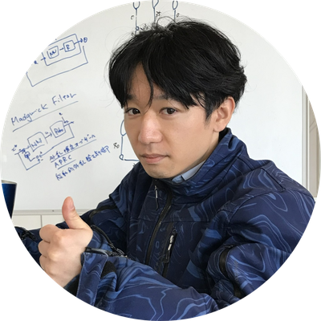

| 吉満 悠平(よしみつ ゆうへい) Yuhei YoshimitsuYuhei Yoshimitsu 吉満 悠平 | |
| 専門 ロボット工学・制御理論Field: Robotics, Control Theory | |
| 学位 博士(工学)Degree: Ph.D. in Engineering | |
| プロフィールProfile |
所属:
九州工業大学
日本学術振興会 特別研究員(PD)Affiliation:
Kyushu Institute of Technology
JSPS Research Fellow (PD)
| ★★★ 最新情報What's New ★★★ |
| ・論文Papers |
| Uncertainty-aware Motion Planning based on Stochastic Forward/Inverse Kinematics Models for Tensegrity Manipulators New! IEEE/RSJ IROS 2025 |
| Real-Time Shape Estimation of Tensegrity Structures Using Strut Inclination Angles IEEE Robotics and Automation Letters 2025 |
| Data-Driven Posture Control of Tensegrity Manipulator Based on Strut's Inclination Angle IEEE Access 2025 |
| ・お知らせNews |
| 2026年4月 日本学術振興会 特別研究員(PD)に採用Apr. 2026: Appointed JSPS Research Fellow (PD) |
| 2026年3月 九州工業大学にて博士(工学)取得Mar. 2026: Received Ph.D. in Engineering from Kyushu Institute of Technology |
このホームページに掲載されている写真・文章の無断転載はご遠慮ください。Please do not reproduce photos or text from this website without permission.
プロフィールProfile
| 名前Name | 吉満 悠平(よしみつ ゆうへい) Yuhei YoshimitsuYuhei Yoshimitsu |
| 所属Affiliation | 九州工業大学Kyushu Institute of Technology |
| 身分Position | 日本学術振興会 特別研究員(PD)JSPS Research Fellow (PD) |
| 学位Degree | 博士(工学)Ph.D. in Engineering |
| 専門Field | ロボット工学、制御理論、ロボットシステムRobotics, control theory, robot systems |
| 得意分野Strengths | 機械・電気・ソフトの全部。一番得意なのは機械Mechanical, electrical and software design — mechanical design above all |
| 出身大学Undergraduate | 鹿児島大学(機械系)Kagoshima University (Mechanical Engineering) |
研究内容Research
・アンドロイドアームの開発Android Arms
バックドライバビリティの高い空気圧アクチュエータやQDD(準ダイレクトドライブ)モータを用いて、人のように柔らかく動くアンドロイドアームを開発しています。Developing android arms that move softly like humans, using highly backdrivable pneumatic actuators and quasi-direct-drive (QDD) motors.
・対話を通じた運動指示Motion Instruction through Dialogue
言葉による対話でロボットに動きを指示する方法と、その応用を研究しています。Studying how to instruct robot motion through spoken dialogue, and its applications.
・触覚センサとヒューマンインタラクションTactile Sensing and Human-Robot Interaction
触覚センサを実装したロボットによる、人とのふれあいを研究しています。Studying physical interaction between people and robots equipped with tactile sensors.
・博士研究:テンセグリティマニピュレータPh.D. Research: Tensegrity Manipulators
張力部材と圧縮部材からなるテンセグリティ構造を用いたマニピュレータを研究しました。Studied manipulators based on tensegrity structures composed of tension and compression members.
・キーワードKeywords
オブザーバベース制御、剛体ダイナミクス、CANによるモータ制御、接触力推定Observer-based control, rigid body dynamics, CAN-based motor control, contact force estimation
論文・業績Publications
・学術論文(査読付き)Journal Papers (peer-reviewed)
- Tufail Ahmad Bhat, Yuhei Yoshimitsu, Kazuki Wada, Shuhei Ikemoto, "Real-Time Shape Estimation of Tensegrity Structures Using Strut Inclination Angles," IEEE Robotics and Automation Letters, 2025. [DOI]
- Kazuki Wada, Yuhei Yoshimitsu, Tufail Ahmad Bhat, Shuhei Ikemoto, "Data-Driven Posture Control of Tensegrity Manipulator Based on Strut's Inclination Angle," IEEE Access, 2025. [DOI]
- Yuhei Yoshimitsu, Shuhei Ikemoto, "Development of Tensegrity Manipulator Driven by 40 Pneumatic Cylinders for Investigating Functionality in Hyper-Redundant Musculoskeletal Systems," Journal of Robotics and Mechatronics, 2023. [DOI]
- Yuhei Yoshimitsu, Kenta Tsukamoto, Shuhei Ikemoto, "Posture control of tensegrity manipulator based on kinematic model using kernel ridge regression," Artificial Life and Robotics, 2022. [DOI]
- Shuhei Ikemoto, Kenta Tsukamoto, Yuhei Yoshimitsu, "Development of a Modular Tensegrity Robot Arm Capable of Continuous Bending," Frontiers in Robotics and AI, 2021. [DOI]
・国際会議(査読付き)International Conferences (peer-reviewed)
- Yuhei Yoshimitsu, Takayuki Osa, Heni Ben Amor, Shuhei Ikemoto, "Uncertainty-aware Motion Planning based on Stochastic Forward/Inverse Kinematics Models for Tensegrity Manipulators," IEEE/RSJ IROS, 2025. [DOI]
- Yuhei Yoshimitsu, Takayuki Osa, Heni Ben Amor, Shuhei Ikemoto, "Active Learning for Forward/Inverse Kinematics of Redundantly-driven Flexible Tensegrity Manipulator," IEEE/RSJ IROS, 2024. [DOI]
- Yuhei Yoshimitsu, Takayuki Osa, Shuhei Ikemoto, "Forward/Inverse Kinematics Modeling for Tensegrity Manipulator Based on Goal-Conditioned Variational Autoencoder," IEEE/RSJ IROS, 2023. [DOI]
- Xiao Liu, Shuhei Ikemoto, Yuhei Yoshimitsu, Heni Ben Amor, "Learning Soft Robot Dynamics Using Differentiable Kalman Filters and Spatio-Temporal Embeddings," IEEE/RSJ IROS, 2023. [DOI]
- Yuhei Yoshimitsu, Kenta Tsukamoto, Shuhei Ikemoto, "Development of Pneumatically Driven Tensegrity Manipulator without Mechanical Springs," IEEE/RSJ IROS, 2022. [DOI]
経歴Career
・2017年 鹿児島大学 入学(機械系・ロボコンサークル所属)
・九州工業大学 大学院 進学
・2026年1月 日本学術振興会 特別研究員(DC2)
・2026年3月 九州工業大学 博士(工学)取得
・2026年4月 日本学術振興会 特別研究員(PD)・2017 Entered Kagoshima University (Mechanical Engineering; robot contest club)
・Graduate School, Kyushu Institute of Technology
・Jan. 2026 JSPS Research Fellow (DC2)
・Mar. 2026 Ph.D. in Engineering, Kyushu Institute of Technology
・Apr. 2026 JSPS Research Fellow (PD)